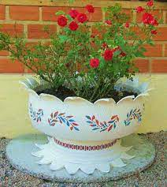

Soy mari: Me gusta preparar diferentes platillos para cocinar,
cultivar flores e igual forma verduras para consumir,
investigar todo, no se nunca quedarme con la duda, poner todo mi empeño
y dedicacion en las diferentes actividades que realizo.

Mis pasatiempos favoritos
escuchar musica solo cuando viajo o camino,
por las tardes novelas turcas que son transmitidas por el canal 103 de dish
fans de los actores turcos: caglar ertugrul y deniz bayzal
y los fines de semana veo peliculas o deportes como el futball o la formula 1
motocross o rally